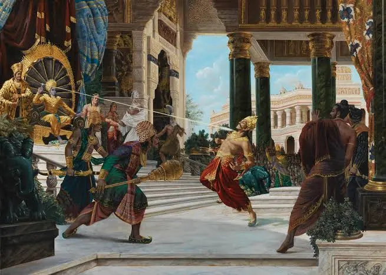
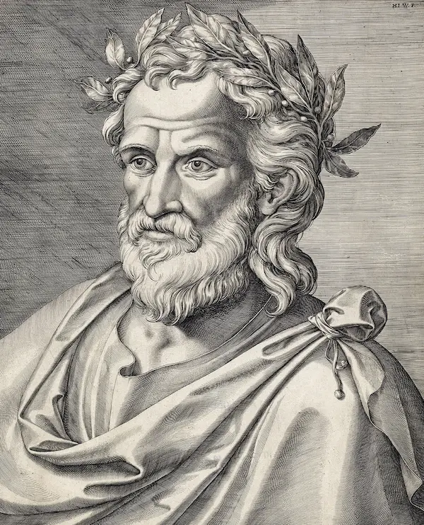

Literary Analyses
✎ Introduction
This collection holds seven essay analyses I wrote for our Great Books class. In each paper, I look into a classic piece of literature to talk about its main themes, characters, and big life questions.
✶ The Seven Works
- Voice out the Whirlwind — Book of Job
- Ramayana — Maharishi Valmiki
- Mahabharata — Maharishi Ved Vyasa
- The Iliad — Homer
- The Odyssey — Homer
- The Song of Roland — Old French Epic
- The Tale of Genji — Murasaki Shikibu
Navigate Here




Voice out the Whirlwind
Ecocritical Lens
Ecocritical lens best fit this story because God speak directly out of a fierce whirlwind and uses the raw power of the natural world to humble Job Instead of debating human rules or morals, the text directs our attention to the mysteries of ocean tides, weather patterns, and untamed beasts like the Leviathan. Looking through this lens helps us see that humans are not the center of the universe, reminding us to respect cosmic forces that exist far beyond our control
Analysis & Insight
✤ Literary Analysis
The passage shows that we cannot always understand or control the hardships that happen to us in life. When God highlights the massive design of the earth and the heavens, it makes Job’s personal complaints feel tiny in comparison. In the end, it reminds us that when life gets overwhelming, practicing humility and accepting our personal limits is often the healthiest response.
✶ My Insight
The story made me realize that every struggle or minor setback that I face is a test of my character. The challenges and sufferings that I face as a student also made me realize that such minor issues don't matter at all because there are bigger pictures than things I have experienced, and also some people suffer more than I do. Ultimately, the story taught me to have faith in the Lord’s plans for me and just be grateful for what I have today.
Ramayana

Archetypal Lens
Archetypal Lens works best here because the story is built around familiar character types and a classic hero's quest. Rama fits the mold of the noble hero who must endure an unjust exile, while Ravana represents the ultimate villain who kicks off the conflict by abducting Sita. Looking at the epic through these recurring story patterns helps us see how ancient literature used clear symbols of good and evil to teach moral duty
Analysis & Insight
✤ Literary Analysis
The main point of this epic is that sticking to your moral duty, or dharma, matters much more than your own personal comfort. Rama gives up his right to the throne without complaining and heads into the wilderness for fourteen years just to honor his family's word. It delivers a strong message that staying honest and loyal will help you get through tough trials, even when other people try to derail your life
✶ My Insight
Ramayana taught me that sometimes upholding integrity and personal morals requires self-sacrifice. Just like Captain America, doing the right thing is hard, especially against difficult odds. As a student, it reminds me that honor, loyalty, and integrity are values that I should always apply in my life.
Mahabharata

Structuralist Lens
Structuralist Lens fits this epic best because the entire narrative is organized around strong binary pairs and opposing forces. You have the virtuous Pandava brothers constantly set against their malicious Kaurava cousins, creating an underlying tension between moral duty and personal greed. Looking at these opposing relationship structures makes it easy to understand how a breakdown in family balance leads to total social collapse.
Analysis & Insight
✤ Literary Analysis
This story shows just how destructive jealousy and family rivalries become when nobody is willing to back down. The catastrophic eighteen-day war ends up wiping out practically everyone, which leaves the winning brothers with intense grief rather than pure joy. It teaches a practical lesson that fighting over pride and holding onto grudges usually ruins things for all sides in the end.
✶ My Insight
This story made me realize that doing the right thing isn't always the best choice. Any actions that we take, no matter how small or big, may impact other people either negatively or positively. As a student, I should always apply thinking twice before doing something, and when I do something wrong, I must take accountability and responsibility.
The Iliad

Psychoanalytic Lens
Psychoanalytic Lens is the most fitting choice because the plot is driven by raw, wounded ego and buried emotional pain. Achilles refuses to fight because his pride was hurt by King Agamemnon, and he only rejoins the battle when intense grief over Patroclus's death turns into an uncontrollable rage. This perspective helps us unpack how deep emotional trauma and wounded pride can blind a person and cause disaster for everyone around them.
Analysis & Insight
✤ Literary Analysis
The Iliad proves how fast unchecked anger and stubborn pride can spiral into tragedy during a crisis. Achilles lets his own comrades suffer on the battlefield simply out of spite, which ends up costing his closest friend's life. It is only when he sits down with King Priam to share their mutual tears that his fury finally calms down, showing that shared empathy is the only real cure for bitterness.
✶ My Insight
The story made me realize that if one cannot control their pride and anger, there will be consequences. Other than that, the story reminded me that human lives are fragile compared to gods; because of that, it taught me that we should live our lives with purpose in every action that we do and that we should be empathetic amongst each other. We're all just humans after all.
The Odyssey
Archetypal Lens
Archetypal Lens is ideal for this epic because Odysseus is the classic example of the wandering hero trying to return home. His journey follows a universal story arc full of familiar roadblocks, including dangerous monsters, tempting enchantresses, and a final test to reclaim his house. Examining these universal story patterns shows how an epic journey serves as a relatable metaphor for overcoming life's everyday obstacles.
Analysis & Insight
✤ Literary Analysis
This epic highlights that staying patient and using your brain is much more reliable than relying solely on brute force. Odysseus escapes deadly traps like the Cyclops and the Sirens because he plans ahead and keeps his cool under pressure. It serves as a helpful reminder that when problems pile up in life, taking a step back to think things through will help you reach your goals.
✶ My Insight
This story taught me that brute force doesn’t always win. As a student that is still currently learning, I should use my intellect and adaptability to my advantage. In real life, patience and intellectual flexibility are keys to success, not just physical strength.
The Song of Roland
Historical / Contextual Lens
Historical / Contextual Lens fits this poem best because the story is deeply rooted in the medieval culture of chivalry and holy war. Written around the time of the First Crusade, the poem directly mirrors the feudal loyalty, knightly codes, and religious clashes of that time period. Looking through this historical background helps us understand why dying on the battlefield for one's king and faith was celebrated as the ultimate honor back then.
Analysis & Insight
✤ Literary Analysis
The story points out the clear danger of letting personal pride get in the way of practical teamwork. Roland refuses to blow his horn to call for backup because he does not want to damage his personal reputation, which ends up getting his entire crew killed. Even though the story praises him as a brave warrior, it gives us a clear warning that being too stubborn to ask for help can lead to unnecessary defeat.
✶ My Insight
This story is somehow similar to the Iliad. The lesson of this story is that true heroism requires wisdom and humanity, as too much pride can lead to tragic situations. In life, I should practice humility at all times.
The Tale of Genji

Feminist Lens
The Feminist Lens is the most fitting approach because the novel was written by a woman, Murasaki Shikibu, who highlights the real social conditions of women in the Heian court. While Prince Genji has the freedom to pursue whatever relationships he likes, the women often deal with quiet heartbreak and social confinement behind screens. This lens allows us to focus on the female voices and emotional burdens that male-centered court histories usually overlook.
Analysis & Insight
✤ Literary Analysis
This book shows that chasing temporary pleasures like social status and endless romance will not bring lasting peace of mind. Even though Genji seemingly has all the charm and wealth in the world, his later years are overshadowed by sorrow and emotional emptiness. It leaves the reader with a thoughtful reminder that because everything in life fades, learning to let go of material attachments is the only way to find inner calm.
✶ My Insight
As a young person, the tale reminded me that nothing lasts forever; that's why we should appreciate what we have today and fully live in the present. But that doesn’t mean we can do anything we want; we should still be mindful of our actions because some may lead to consequences for ourselves or for others.